A Plate for Every Choice
Every page in the career sim where the player decides something, paired with the period illustration it uses — or, where it has none, a brief describing what the picture should show and where to go looking for it.
This is a design-phase working document. Rights are not cleared for the candidates below; they are recorded with repository, shelfmark and licence so that clearance can be sought later against a real citation rather than a memory.
- 70choice pages
- 24with a plate
- 46briefed, awaiting a plate
- 78candidate sources
- 8archives researched
Phase 1 · CAIRO — THE EXPERIMENTAL COSMOPOLIS — c. 1385–1397 · 14 choice pages, 6 still wanting a plate
AT THE MADRASA · MORNING LESSONS
Plate wanted ATTESTEDWhat the picture should show
A teaching circle: a turbaned master seated against a pillar, students cross-legged in a half-ring, one holding an open codex, writing boards on knees. Daylight from a courtyard beyond.
Composition
Horizontal, figures at one third height, architecture giving the top two thirds. Should read as ORDINARY — this is the orthodox training the player will later depart from.
Search terms
- madrasa teaching scene manuscript
- Maqamat al-Hariri school
- majlis lesson miniature
- students writing boards Islamic
The choice
The law professors teach what Cairo certifies: jurisprudence, disputation, the instruments of a judge’s career. It is slow, orthodox, and respected — and it is the credential your family’s judicial line expects of you.
- Commit to rigorous scholastic training
- Attend only enough to pass unremarked
Candidate sources
al-Ḥarīrī, Maqāmāt (the Schefer Ḥarīrī) · BnF Arabe 5847
https://gallica.bnf.fr/ The canonical source of medieval Islamic teaching/assembly scenes. Earlier than our period (1237) but the compositional vocabulary is what we want. Licence: Free non-commercial + academic with credit; commercial requires fee
Search Arabic/Persian codices for teaching scenes
https://www.thedigitalwalters.org/ Licence: CC0 — no attribution required
AT THE MADRASA · A PUBLIC DISPUTATION
Plate wanted INVENTED-COMPATIBLEWhat the picture should show
Two scholars facing off before a seated audience, one mid-gesture with an index finger raised — the standard iconography of argument. Onlookers ranked behind.
Composition
Confrontational symmetry: two figures balanced left and right, audience as a frieze behind. Tension in the hands, not the faces.
Search terms
- munazara disputation miniature
- debate scene Persian manuscript
- scholars arguing Islamic painting
The choice
A visiting jurist stakes a position on the limits of permissible sciences, and the hall turns to the students. A strong answer is a reputation. A clever one is a risk. Silence is also an answer.
- Argue squarely within the law
- Defend the mathematical sciences by demonstration
- Hold your tongue
Candidate sources
Persian manuscript debate scenes
https://chesterbeatty.ie/collections/ Licence: Creative Commons, attribution required (variant unconfirmed)
Maqāmāt assembly scenes · BnF Arabe 5847
https://gallica.bnf.fr/ Licence: Free non-commercial + academic with credit; commercial requires fee
A COURTYARD OFF THE COPPERSMITHS’ STREET · AFTER DARK
Plate in use ATTESTEDPlate in use
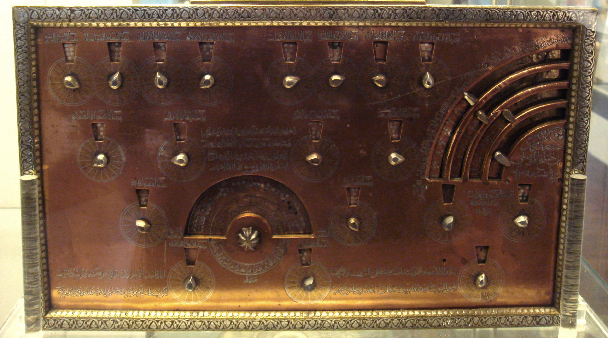
Geomantic instrument, Egypt or Syria, 1241/42 CE — British Museum (via Wikimedia Commons)
Geomantic Instrument — Egypt or Syria, 1241/42 CE (Full View)
https://commons.wikimedia.org/wiki/File:Geomantic_instrument_Egypt_or_Syria_1241_1242_CE_Muhammad_ibn_Khutlukh_al_Mawsuli.jpg Public domain. Photographed at the British Museum by User:PHGCOM, 2009.
{kind=link}
The choice
Sayyid Ḥusayn Akhlāṭī receives students the madrasa would never admit to envying. On his table: letter-tables, a geomancer’s brass instrument, a crucible still warm. He asks one question — what do you want to learn first?
- The science of letters
- The work of the furnace
- The figures in the sand
AKHLĀṬĪ’S COURTYARD · THE MASTER’S REQUEST
Plate wanted PLAUSIBLE-GAPWhat the picture should show
A night interior, small: master and single disciple, close, a lamp between them. Something is being asked that should not be overheard.
Composition
Tight and dark. Two figures only. The lamp is the light source and the emotional centre.
Search terms
- Sufi master disciple night miniature
- khanqah lamp scene Persian
- initiation shaykh murid painting
The choice
Akhlāṭī’s name travels — admired in three languages, denounced in two. Tonight he asks, mildly, whether you will let it be known whose student you are. The question is a door with two hinges: honor, and exposure.
- Declare the discipleship openly
- Study on, but privately
Candidate sources
Persian Sufi manuscript painting, Freer|Sackler
https://asia.si.edu/collections/ Licence: CC0
Search: Sufi teaching, Persian, 15th c.
https://www.metmuseum.org/art/collection Licence: CC0 for public-domain works
AKHLĀṬĪ’S COURTYARD · AN ARGUMENT OF FATHERS
Plate in use ATTESTEDPlate in use
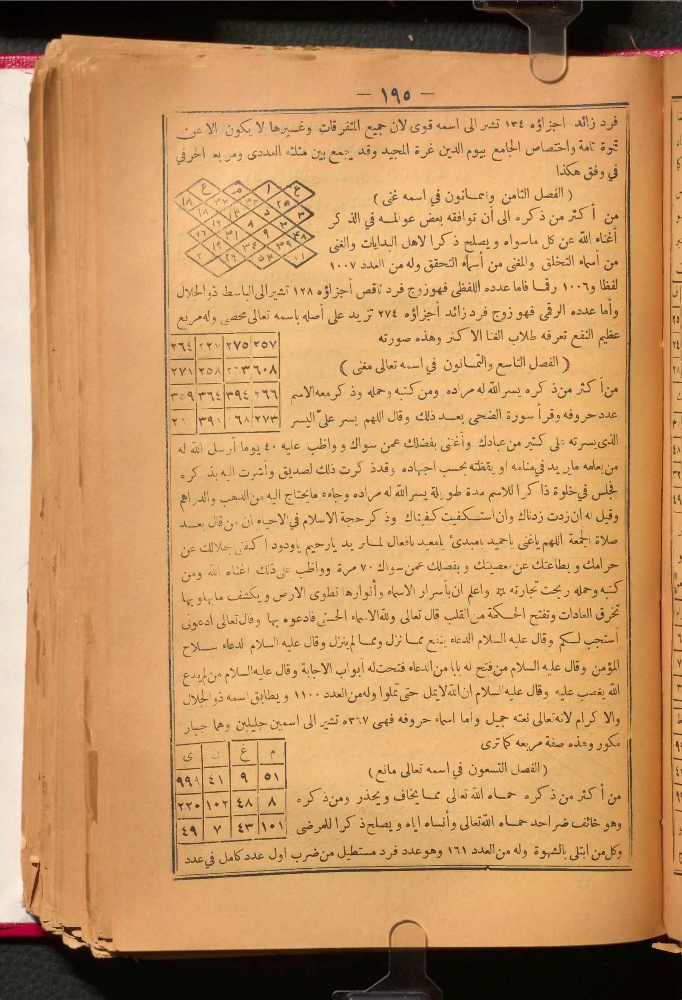
Magic squares (awfāq) and letter-grid tables — Shams al-Maʿārif, printed edition (Wikimedia Commons)
Magic Squares (Awfaq) and Letter-Grid Tables — Shams al-Ma'arif (p. 201)
https://commons.wikimedia.org/wiki/File:Shams_al-Ma%27arif.jpg Public Domain — printed edition over 100 years old. Scan: McGill University Libraries.
{kind=link}
The choice
The circle quarrels amiably over descent: is the science of letters Ibn ʿArabī’s, the Andalusian Supreme Master’s — or Saʿd al-Dīn Ḥamūya’s, his Iranian twin? Partisans of each want you. Akhlāṭī watches to see how you think.
- Stand with Ibn ʿArabī’s line
- Stand with Ḥamūya’s line
- Insist the two are co-founders
AKHLĀṬĪ’S COURTYARD · THE CIRCLE TAKES A NAME
Plate wanted ATTESTEDWhat the picture should show
A group of six to ten men in a closed courtyard at night, seated in a ring — a deliberate assembly, not a class. One speaks; the rest are still.
Composition
The ring seen from slightly above so the circle reads AS a circle. This is the Ikhwān al-Ṣafāʾ naming scene: the composition should be the argument.
Search terms
- Ikhwan al-Safa Brethren of Purity manuscript
- assembly circle night Persian miniature
- Rasail Ikhwan al-Safa illustration
The choice
Late, lamps low, someone says it aloud: this circle should call itself Ikhwān al-Ṣafāʾ — the Brethren of Purity, the name of the old encyclopedists of Basra. To take a four-hundred-year-old banner is not a joke. Everyone looks at everyone.
- Take the name, and say why
- Warn against a name that can be indicted
Candidate sources
Rasāʾil Ikhwān al-Ṣafāʾ illustrated pages
https://commons.wikimedia.org/ The 10th-c. Brethren whose name this circle takes — a picture from their own tradition would be the ideal pairing. Licence: Per file — CC0 / CC BY-SA / PD
BL Arabic manuscripts, philosophical assemblies
https://www.qdl.qa/ Licence: Mostly open; check per item
AT THE KHĀNQĀH · A POET IN FULL FLIGHT
Plate wanted ATTESTEDWhat the picture should show
A poet reciting to a rapt gathering — arms open, head tilted back, listeners leaning in. Wine or tea vessels on the floor. Warm, crowded, slightly out of control.
Composition
Off-centre poet, weight of the crowd pushing toward him. The most saturated plate in Phase I.
Search terms
- Persian poet reciting majlis miniature
- sama gathering painting
- Hafez Divan illustrated assembly
The choice
Qāsim-i Anvār recites and the whole khānqāh forgets to breathe. Afterward he finds you, laughing, quoting your own question back at you improved. Men like this either become your brother or your epitaph. Sometimes both.
- Let the friendship go deep
- Keep a warm distance
Candidate sources
Divan of Sultan Ahmad Jalayir, c. 1400 · Freer Gallery F1932.29–37
https://asia.si.edu/ c. 1400 Jalayirid — the closest major illustrated Divan to Ibn Turka's own decade. Strong first candidate. Licence: CC0
Illustrated Persian dīvāns
https://chesterbeatty.ie/collections/ Licence: Creative Commons, attribution required (variant unconfirmed)
AT THE KHĀNQĀH · SAMĀʿ, AND WHAT FOLLOWS IT
Plate in use INVENTED-COMPATIBLEPlate in use

Ursa Major, from al-Ṣūfī’s Book of Fixed Stars (Wikimedia Commons)
Ursa Major, al-Ṣūfī's Book of Fixed Stars
https://commons.wikimedia.org/wiki/File:Al_Sufi_-_Book_of_Fixed_Stars_-_Ursa_Major_(The_Great_Bear)_-_Bodleian_Library_-_Marsh_144.jpg Public domain. Via Wikimedia Commons.
_-_Bodleian_Library_-_Marsh_144.jpg){kind=link}
The choice
After the audition Qāsim keeps a smaller company back and turns the talk from ecstasy to letters: could a verse be built on number the way a talisman is? He is asking you, specifically, in front of men who will repeat your answer.
- Sketch the letter-number art for them
- Turn the question into a jest
THE BOOKSELLERS’ BAZAAR · AN UNATTRIBUTED TREATISE
Plate in use INVENTED-COMPATIBLEPlate in use
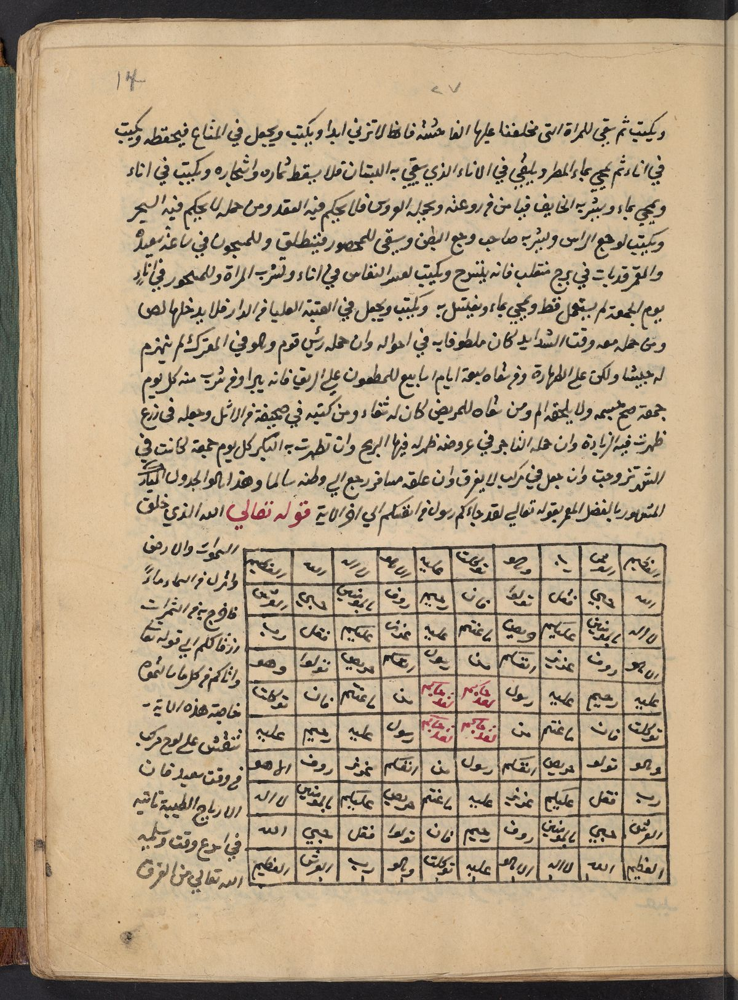
Letter-word wafq table, Quranic name operations grid — Princeton University Library
Large Letter-Word Wafq Table — Quranic Name Operations Grid (f. 14r) · Princeton University Library, Garrett no. 3182Y (figgy 567baddd)
https://dpul.princeton.edu/islamicmss/catalog/dc4q77g332q Public Domain. Princeton University Library.
The choice
A dealer who knows your haunts unrolls something unsigned: tables pairing letters to numbers to stations of the moon, in a hand nobody recognizes. He wants a week’s wages for it. Three other men in Cairo would want it more.
- Test its number-structure before buying
- Bring Akhlāṭī to see it quietly
- Let it go
THE TIMEKEEPER’S POST · INSTRUMENTS AND HOURS
Plate in use PLAUSIBLE-GAPPlate in use
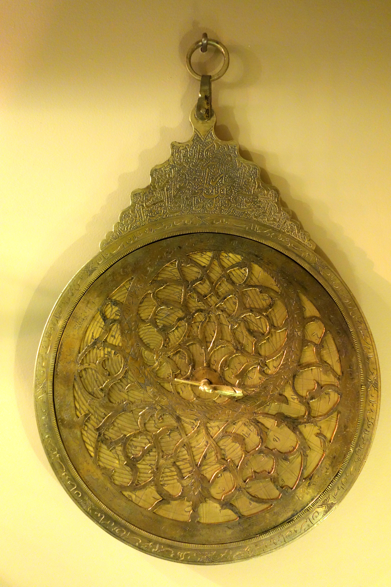
Persian astrolabe, brass (Wikimedia Commons)
Persian Astrolabe (brass)
https://commons.wikimedia.org/wiki/File:Astrolabe,_Iran,_undated,_brass_-_Huntington_Museum_of_Art_-_DSC04900.JPG Public domain (CC0, Huntington Museum of Art). Via Wikimedia Commons.
{kind=link}
The choice
The mosque’s muwaqqit — the timekeeper — computes the prayer hours with astrolabe and tables, the one occult-adjacent mathematics no jurist can object to. He needs an assistant with steady hands and will teach what the position teaches.
- Assist him through a season
- Watch a single night’s working
THE TIMEKEEPER’S POST · ANOTHER PERSIAN AT THE DIALS
Plate wanted ATTESTEDWhat the picture should show
Two men at an instrument — astrolabe or sundial — one demonstrating, one checking. The first meeting of Ibn Turka and Yazdī. They should look like equals who have just recognised each other.
Composition
Both hands on or near the instrument. The instrument is the third character.
Search terms
- astrolabe astronomers manuscript miniature
- muwaqqit timekeeper Islamic
- two scholars instrument Persian painting
The choice
Another Persian keeps turning up at the tables: Sharaf al-Dīn ʿAlī of Yazd, who checks the muwaqqit’s arithmetic for pleasure and talks about history the way you talk about letters. He has noticed you noticing him.
- Meet him as an equal — trade everything
- Take the senior part — teach, don’t trade
Candidate sources
Persian/Mamluk astrolabes and astronomical scenes
https://www.metmuseum.org/art/collection Licence: CC0 for public-domain works
Persian astrolabe (already used at act2-persian-astrolabe.jpg)
https://commons.wikimedia.org/ The project already holds a cleared astrolabe plate — a second, figural scene would complement it. Licence: Per file — CC0 / CC BY-SA / PD
THE MERCHANT’S MAJLIS · A WANDERER’S IMPOSSIBLE CLAIM
Plate in use INVENTED-COMPATIBLEPlate in use
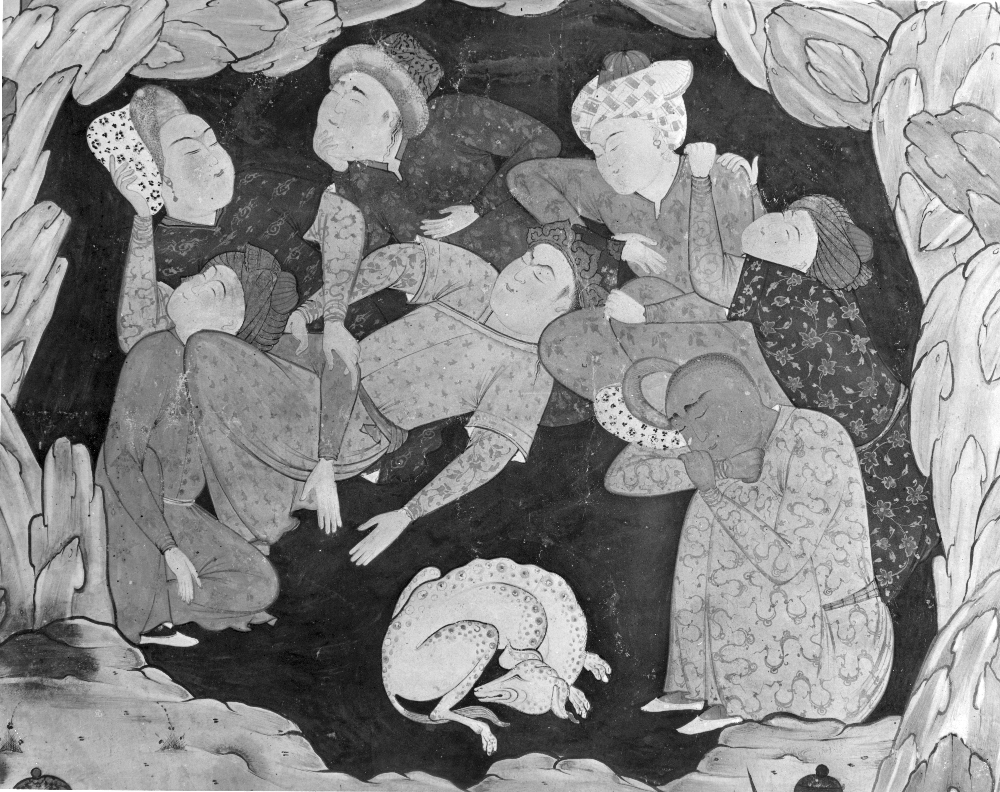
The Seven Sleepers of Ephesus, folio from a Falnāma — Book of Omens (Wikimedia Commons)
The Seven Sleepers of Ephesus, Folio from a Falnāma (Book of Omens)
https://commons.wikimedia.org/wiki/File:%22The_Seven_Sleepers_of_Ephesus_Discovered_by_Alexander_the_Great%22,_Folio_from_a_Falnama_(Book_of_Omens)_MET_121050.jpg Public domain (CC0, Metropolitan Museum of Art). Via Wikimedia Commons.
_MET_121050.jpg){kind=link}
The choice
A traveling dervish holds the salon rapt: he claims he can be in Cairo and Damascus in the same night, and has witnesses. The merchant, your host, turns to you — the studious one — and asks, smiling, whether it can be true.
- Examine the claim like an apparatus
- Reframe it philosophically
- Let the wonder stand
THE MERCHANT’S MAJLIS · THE HOST WANTS A WONDER
Plate in use INVENTED-COMPATIBLEPlate in use
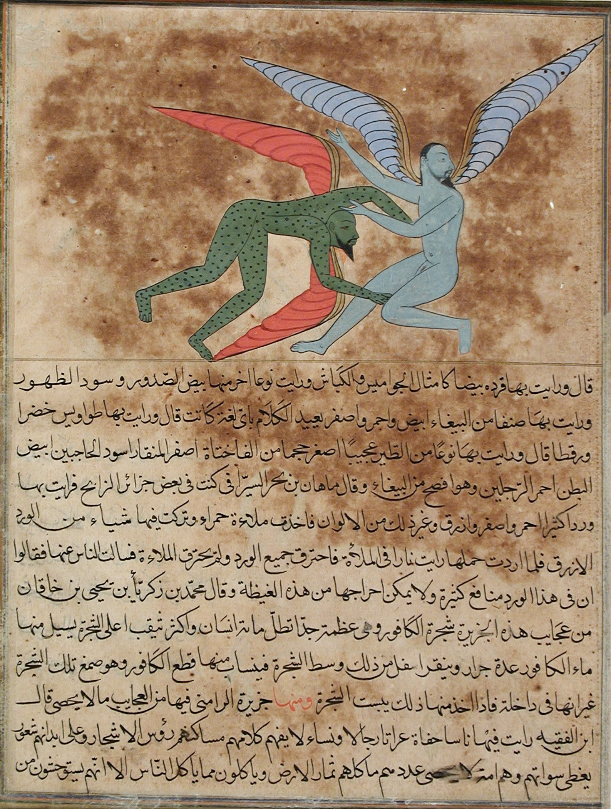
Winged angels, al-Qazwīnī’s Wonders of Creation (Wikimedia Commons)
Winged Angels (and Winged Feline and Cow), al-Qazwīnī's ʿAjāʾib al-makhlūqāt
https://commons.wikimedia.org/wiki/File:A)_Winged_Feline_and_Cow;_b)_Two_Winged_Angels,_Folio_from_a_Manuscript_of_Al-Qazwini%27s_Ajaib_Al-Makhluqat_LACMA_M.88.213.8a-b.jpg Public domain. Via Wikimedia Commons.
_Winged_Feline_and_Cow;_b)_Two_Winged_Angels,_Folio_from_a_Manuscript_of_Al-Qazwini%27s_Ajaib_Al-Makhluqat_LACMA_M.88.213.8a-b.jpg){kind=link}
The choice
The wine has gone round twice and the merchant claps for entertainment — and looks at you. “Our scholar! Show us something the preachers wouldn’t like.” The room laughs. Whatever happens in the next ten minutes will be retold.
- Perform a real wonder, properly
- Give them Qāsim’s verses instead
- Attempt sleight-of-hand untrained
- Decline, with a jurist’s smile
THE ROAD HOME · CAIRO ENDS
Plate in use ATTESTEDPlate in use
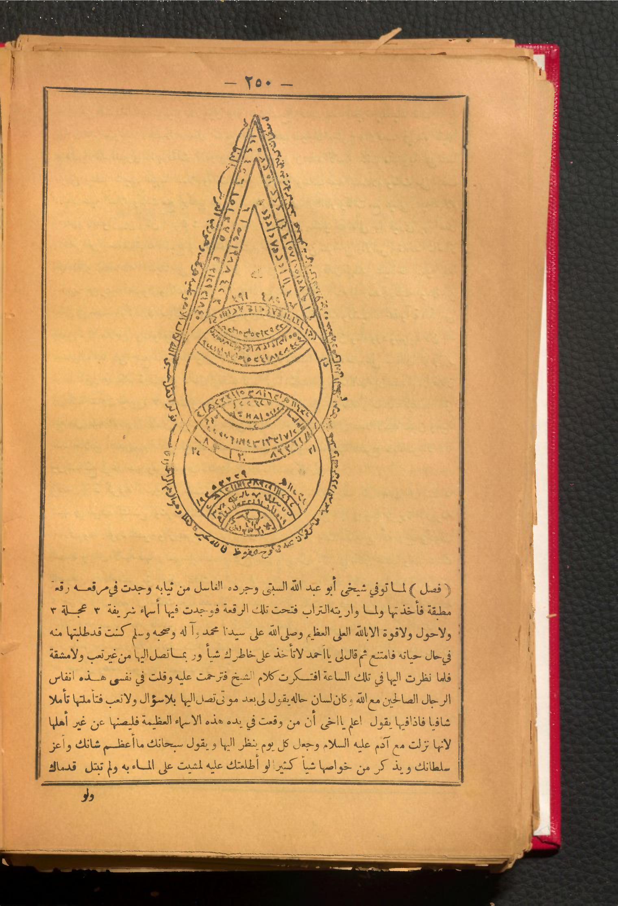
Teardrop cosmological diagram — Shams al-Maʿārif, p. 256 (Wikimedia Commons)
Teardrop Cosmological Diagram — Shams al-Ma'arif (p. 256)
https://commons.wikimedia.org/wiki/File:Shams_al-Ma%27arif.jpg Public Domain — printed edition over 100 years old. Scan: McGill University Libraries.
The choice
Word runs through the quarter like cold water: Sayyid Ḥusayn Akhlāṭī is dead. The circle stands in his courtyard not knowing where to put its hands. Cairo is finished for you — the question is only what you carry to Isfahan, and how.
- Leave as his acknowledged student
- Carry the Brethren’s letters east
- Return as a jurist, nothing more
- Travel in company with Yazdī
Phase 2 · ISFAHAN — THE JUDGE’S CITY — c. 1397–1409 · 14 choice pages, 11 still wanting a plate
THE TRIBUNAL · THE OFFICE OFFERED
Plate wanted ATTESTEDWhat the picture should show
A robing or investiture: a seated official receiving a robe of honour (khilʿa) or a document of appointment from a superior, attendants flanking.
Composition
Formal, frontal, hierarchical — the opposite of the Cairo night scenes. Power arriving as ceremony.
Search terms
- khilat robe of honour investiture miniature
- Persian appointment ceremony painting
- qadi judge manuscript illustration
The choice
The bench your father sat on is open, and the city expects a Turka on it. The office pays, protects, and confers the one credential no accusation slides off easily: you would be a judge, not merely a man with opinions.
- Take the judgeship
- Refuse the bench
- Serve, but seek a deputy first
Candidate sources
Timurid/Turkman court investiture scenes
https://chesterbeatty.ie/collections/ Licence: Creative Commons, attribution required (variant unconfirmed)
Search: Persian court audience, 15th c.
https://www.metmuseum.org/art/collection Licence: CC0 for public-domain works
THE TRIBUNAL · A POWERFUL MAN AND A POOR ONE
Plate wanted ATTESTEDWhat the picture should show
A judgment scene: judge seated on a low dais, two litigants before him at conspicuously different social registers — dress, posture, retinue. A scribe records at the side.
Composition
The asymmetry must be legible at a glance: one man has people behind him, the other does not.
Search terms
- qadi court judgment miniature
- Islamic legal scene manuscript
- Maqamat judge litigants
The choice
A landowner with friends at the governor’s house has taken a smallholder’s water rights. The law is not ambiguous. The landowner’s expectation that this will not matter is also not ambiguous.
- Rule for the smallholder
- Force a settlement instead
- Rule for the landowner and bank the favor
Candidate sources
Maqāmāt al-Ḥarīrī judgment scenes · BnF Arabe 5847
https://gallica.bnf.fr/ The Maqāmāt has several qāḍī scenes and is the standard visual source for Islamic courtroom iconography. Licence: Free non-commercial + academic with credit; commercial requires fee
Arabic legal/administrative manuscripts
https://www.thedigitalwalters.org/ Licence: CC0 — no attribution required
THE TRIBUNAL · AN ACCUSATION OF SORCERY
Plate in use PLAUSIBLE-GAPPlate in use
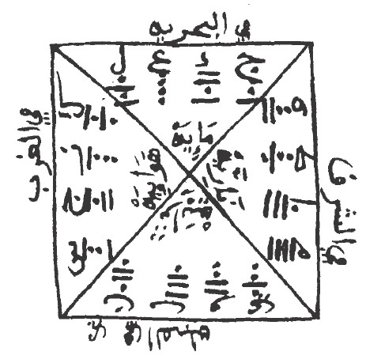
Arabic diagram of geomantic figures classification, 15th c. (Wikimedia Commons)
Arabic Diagram of Geomantic Figures Classification (15th c., from Madagascar)
https://commons.wikimedia.org/wiki/File:Arab_geomantic_figures_classification.jpg Public domain. Sourced from OpenEdition Journals (L'Homme).
{kind=link}
The choice
A man is charged with sorcery. On the evidence table: sand-boards, a chart of figures, a client list. You are the one judge in Isfahan who can tell at a glance that this is geomancy — a technical craft, badly practiced. Saying so out loud t…
- Acquit on the technical ground
- Acquit on procedure — say nothing about the craft
- Convict him
THE FAMILY HOUSE · WHAT THE HOUSE EXPECTS
Plate wanted PLAUSIBLE-GAPWhat the picture should show
A domestic interior: an older relative and the protagonist, a household beyond the doorway. Property, obligation, family. Not a court, not a school.
Composition
Interior architecture doing the work — a house that is itself an expectation. Figures small within it.
Search terms
- Persian domestic interior miniature
- Timurid house courtyard painting
- family scene Islamic manuscript
The choice
Your kin want to know what Cairo was for. There is a family library of law and hadith, a family reputation, and a family assumption that the strange years abroad are now concluded.
- Tell them what they want to hear
- Tell them the truth and ask for the library
Candidate sources
Persian domestic architecture in manuscript painting
https://asia.si.edu/collections/ Licence: CC0
Persian illustrated codices, interior scenes
https://www.thedigitalwalters.org/ Licence: CC0 — no attribution required
THE FAMILY HOUSE · YOUR DEPUTY WANTS SOMETHING
Plate wanted INVENTED-COMPATIBLEWhat the picture should show
A junior official presenting a petition or document to a seated superior — deferential posture, but the document is the point and he is not leaving without an answer.
Composition
Standing petitioner, seated principal. The gap between them is the subject.
Search terms
- petition presentation Persian miniature
- secretary official document manuscript
- Timurid administration scene
The choice
Your deputy has been running the docket well enough that the city half-thinks he is the judge. He would like that to be formalized — or at least, he would like you to notice that he could make it awkward if it is not.
- Give him the docket outright
- Remind him whose bench it is
Candidate sources
Persian chancery/administrative scenes
https://chesterbeatty.ie/collections/ Licence: Creative Commons, attribution required (variant unconfirmed)
THE WARRĀQ’S SHOP · A MAN WHO COPIES ANYTHING
Plate wanted PLAUSIBLE-GAPWhat the picture should show
A bookseller-copyist at work: low desk, reed pen, inkpot, stacked bindings, a shop open to the street. Commerce in manuscripts.
Composition
Cluttered and horizontal. Books as goods, not treasures.
Search terms
- warraq bookseller manuscript miniature
- scribe copying Persian painting
- kitabkhana workshop illustration
The choice
The warrāq works fast, charges fairly, and has never once asked what a text is for. Everything you have written so far exists in exactly one copy, in your own hand, in a house that could burn.
- Commission copies of your notes
- Copy everything in your own hand
Candidate sources
Scribal and colophon illustrations
https://www.thedigitalwalters.org/ Licence: CC0 — no attribution required
Search: scribe, Persian manuscript painting
https://www.metmuseum.org/art/collection Licence: CC0 for public-domain works
THE WARRĀQ’S SHOP · THE INK THAT EATS THE PAGE
Plate wanted INVENTED-COMPATIBLEWhat the picture should show
Close on materials: inkpots, pigment dishes, a page showing corrosion or burn-through. Almost a still life. The craft turning against itself.
Composition
Tight, object-focused, no faces if possible. A rare non-figural plate.
Search terms
- iron gall ink corrosion manuscript
- Islamic pigments inkpot
- damaged folio ink burn
The choice
The warrāq shows you a ruined quire: last year’s copies, the ink gone brown and the paper crumbling where the strokes ran thickest. Iron-gall ink, badly compounded, is slowly eating your own words. He knows you studied strange arts in Cairo…
- Compound a stable ink yourself
- Find him a better supplier
- Paper is the copyist’s problem
Candidate sources
Manuscript condition/conservation imagery
https://www.thedigitalwalters.org/ The Digital Walters photographs damage honestly at high resolution — good hunting ground for a corroded page. Licence: CC0 — no attribution required
Iron gall ink corrosion examples
https://commons.wikimedia.org/ Licence: Per file — CC0 / CC BY-SA / PD
THE WARRĀQ’S SHOP · THE FIRST THING WORTH CIRCULATING
Plate wanted PLAUSIBLE-GAPWhat the picture should show
A finished treatise being handed over, or an opening page (ʿunwān) freshly illuminated. The first work going out into the world.
Composition
The page itself as hero — an illuminated incipit shot square, minimal figures.
Search terms
- illuminated unwan opening page Persian
- sarlawh illumination Timurid
- treatise incipit manuscript
The choice
You have a short treatise finished: the letter-number correspondences, argued cleanly, with the theology left implicit. It is the first piece of the system that a stranger could actually use. The warrāq is waiting.
- Circulate it among scholars only
- Let it circulate freely
- Burn the fair copy and keep working
Candidate sources
Illuminated ʿunwān pages, Persian codices
https://www.thedigitalwalters.org/ CC0 and photographed at 1200PPI for illuminated pages — ideal for a full-bleed incipit plate. Licence: CC0 — no attribution required
Islamic Manuscripts, illuminated openings
https://library.princeton.edu/special-collections Licence: Per item; many open
THE FRIDAY MOSQUE · A SERMON AGAINST THE LETTER-MEN
Plate wanted PLAUSIBLE-GAPWhat the picture should show
A preacher on a minbar, congregation below, one listener at the edge visibly the target of what is being said.
Composition
Vertical: the minbar high left or right, the crowd low. The player is in that crowd.
Search terms
- minbar preacher khutba miniature
- Friday mosque sermon Persian painting
- preacher congregation Islamic manuscript
The choice
The Friday preacher spends a quarter of an hour on men who claim the letters of the Qurʾan hide a mathematics. He does not name you. He does not need to; two rows of heads have already half-turned.
- Answer him after the prayer, in front of everyone
- Seek him privately afterward
- Sit through it
Candidate sources
Maqāmāt preaching scenes · BnF Arabe 5847
https://gallica.bnf.fr/ The Maqāmāt minbar scene is the standard image of Islamic preaching. Licence: Free non-commercial + academic with credit; commercial requires fee
Persian mosque interiors
https://chesterbeatty.ie/collections/ Licence: Creative Commons, attribution required (variant unconfirmed)
ISFAHAN · A MERCHANT WANTS HIS SON’S NATIVITY READ
Plate in use PLAUSIBLE-GAPPlate in use
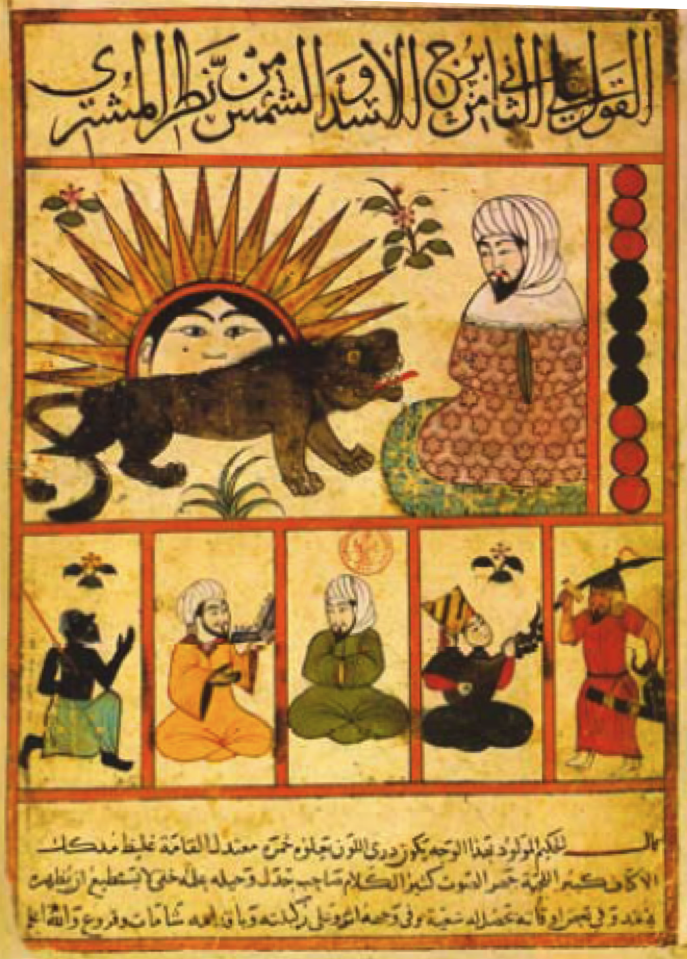
Astrological figure from a Book of Nativities, after Abū Maʿshar al-Balkhī (Wikimedia Commons)
Astrological Figure from a Book of Nativities (after Abū Maʿshar)
https://commons.wikimedia.org/wiki/File:Abu_Ma%27shar(Ibn_Balkhi)-850AD.png Public domain. Via Wikimedia Commons.
-850AD.png){kind=link}
The choice
A wealthy merchant wants to know whether his son should be sent into trade or into the law. He is offering good money for a nativity. He is also, without meaning to, offering you your first paying client as a practitioner.
- Cast the nativity properly
- Read the boy’s name, not his stars
- Advise him as a judge, and take nothing
YOUR OWN STUDY · THE LETTERS AND THE NUMBERS
Plate wanted ATTESTEDWhat the picture should show
A solitary scholar at night with a page of letters and numerals — abjad work in progress. Diagrams, not prose.
Composition
One figure, one lamp, one page. The quietest plate in the game and the most important: this is the science being made.
Search terms
- abjad numerology table manuscript
- lettrism huruf diagram Islamic
- scholar writing night Persian miniature
The choice
A long night with the tables. The correspondence between letter-values and the ratios in a musical interval is either the deepest thing you have ever noticed or an artifact of your own arithmetic. There is one way to find out.
- Work it through to the end
- Note it and move on
Candidate sources
Islamic Manuscripts — lettrist and numerological diagrams
https://library.princeton.edu/special-collections Princeton already supplies 3 registry entries; its Islamic MSS include occult-scientific material. Licence: Per item; many open
BL Arabic MSS, ʿilm al-ḥurūf
https://www.qdl.qa/ Licence: Mostly open; check per item
YOUR OWN STUDY · THE MYSTERIOUS LETTERS
Plate in use ATTESTEDPlate in use
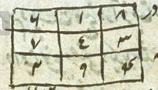
Budūh magic square, al-Qazwīnī — Persia, c. 1280 (Wikimedia Commons)
Buduh Magic Square (al-Qazwini, 13th c.)
https://commons.wikimedia.org/wiki/File:Buduh_magic_square.jpg Public Domain
{kind=link}
The choice
The disconnected letters that open certain sūras — alif lām mīm, ṭā hā — have defeated commentary for eight centuries. Every exegete says they are a divine secret. You are increasingly sure they are a divine *notation*.
- Treat them as notation and build the system on them
- Handle them reverently and stay inside commentary
YOUR OWN STUDY · A LETTER FROM QĀSIM
Plate wanted PLAUSIBLE-GAPWhat the picture should show
A letter being read alone. Correspondence as intrusion — the outside world arriving on a single sheet.
Composition
The sheet catches the light; the reader's face is turned into shadow. Intimate.
Search terms
- reading letter Persian miniature
- epistle munshaat manuscript
- messenger delivering letter Islamic painting
The choice
Qāsim writes from the road: verses, gossip, and a request. He is gathering listeners faster than he can teach them, and he wants something of yours he can recite — the system in a form that sings.
- Send him the doctrine in verse
- Send a careful prose exposition instead
- Send only friendship
Candidate sources
Persian narrative painting, letter-reading scenes
https://asia.si.edu/collections/ Licence: CC0
THE SUMMONS · A PRINCE SENDS FOR YOU
Plate wanted ATTESTEDWhat the picture should show
A royal messenger delivering a summons — a mounted rider arriving, or a courier presenting a sealed farmān at a doorway.
Composition
Movement entering a static frame. The horse, if there is one, should feel like an interruption.
Search terms
- royal messenger farman delivery miniature
- Timurid courier horse painting
- sealed decree presentation Persian
The choice
A courier in Timurid livery, a sealed letter, and an invitation that is not really one: Iskandar Sultan, prince and governor of Fars, has heard there is a judge in Isfahan who reads more than law. The Isfahan years end here.
- Go, and bring the whole apparatus
- Go as a jurist, and let them discover the rest
- Go, and bring your people
Candidate sources
Timurid/Turkman narrative painting, arrivals
https://chesterbeatty.ie/collections/ Licence: Creative Commons, attribution required (variant unconfirmed)
Search: Persian horseman, 15th c.
https://www.metmuseum.org/art/collection Licence: CC0 for public-domain works
Phase 3 · THE COURTS — c. 1409–1419 · 16 choice pages, 8 still wanting a plate
THE AUDIENCE HALL · WHOSE MAN WILL YOU BE
Plate wanted ATTESTEDWhat the picture should show
An enthroned prince receiving in audience, courtiers ranked, a newcomer being presented. THE patronage image.
Composition
Full court hierarchy visible — throne, attendants, supplicant. Grand and cold.
Search terms
- Timurid enthronement audience miniature
- Shahrukh Baysunghur court scene
- prince enthroned courtiers Persian painting
The choice
Two houses want you, and a third possibility exists. Iskandar Sultan’s court at Shiraz fuses star science, poetry and painting — brilliant and politically exposed. Bāysunghur, Shāh Rukh’s son, offers the finest book-workshop in the world an…
- Take service with Iskandar Sultan
- Take service with Bāysunghur
- Go to Samarkand with Yazdī
Candidate sources
Timurid court/enthronement scenes
https://chesterbeatty.ie/collections/ Chester Beatty's Persian holdings are the strongest single source for Timurid court imagery. Licence: Creative Commons, attribution required (variant unconfirmed)
Freer|Sackler Persian court painting
https://asia.si.edu/collections/ Licence: CC0
Search: enthronement, Iran, 15th century
https://www.metmuseum.org/art/collection Licence: CC0 for public-domain works
THE AUDIENCE HALL · THE PATRON WANTS SOMETHING USEFUL
Plate wanted ATTESTEDWhat the picture should show
A patron setting a task: a ruler gesturing toward a kneeling scholar, an object or document between them. Instruction, not conversation.
Composition
The patron's gesture is the composition. Everything points away from him toward the work.
Search terms
- patron commissioning scholar miniature
- Timurid royal commission painting
- ruler instructing courtier Persian
The choice
The commission is put plainly, which is how commissions are put: something demonstrable, by a named season, in exchange for money and standing. The prince does not want a philosophy. He wants a result he can show people.
- Promise a public demonstration
- Promise a written exposition instead
- Negotiate the terms down
- Decline the commission
Candidate sources
Timurid patronage scenes
https://chesterbeatty.ie/collections/ Licence: Creative Commons, attribution required (variant unconfirmed)
THE AUDIENCE HALL · THE PRINCE’S QUESTION
Plate wanted ATTESTEDWhat the picture should show
A close audience: prince and scholar, few attendants, the prince leaning forward. A real question being asked in a room built for ceremony.
Composition
Intimacy inside grandeur — cut in close so the hall is implied, not shown.
Search terms
- prince scholar consultation miniature
- Persian royal conversation painting
- ruler questioning sage manuscript
The choice
He has been thinking, which is dangerous in princes. "If the letters are the architecture of creation," he says, "what does that tell us about the architecture of kingship?" The hall goes quiet. This is the question your whole science exist…
- Answer: it makes kingship a discipline he must study
- Answer: it shows his house was written into the cosmos
- Refuse to reduce the science to statecraft
Candidate sources
Persian royal consultation scenes
https://asia.si.edu/collections/ Licence: CC0
THE AUDIENCE HALL · HOW LONG WILL MY HOUSE LAST?
Plate in use ATTESTEDPlate in use
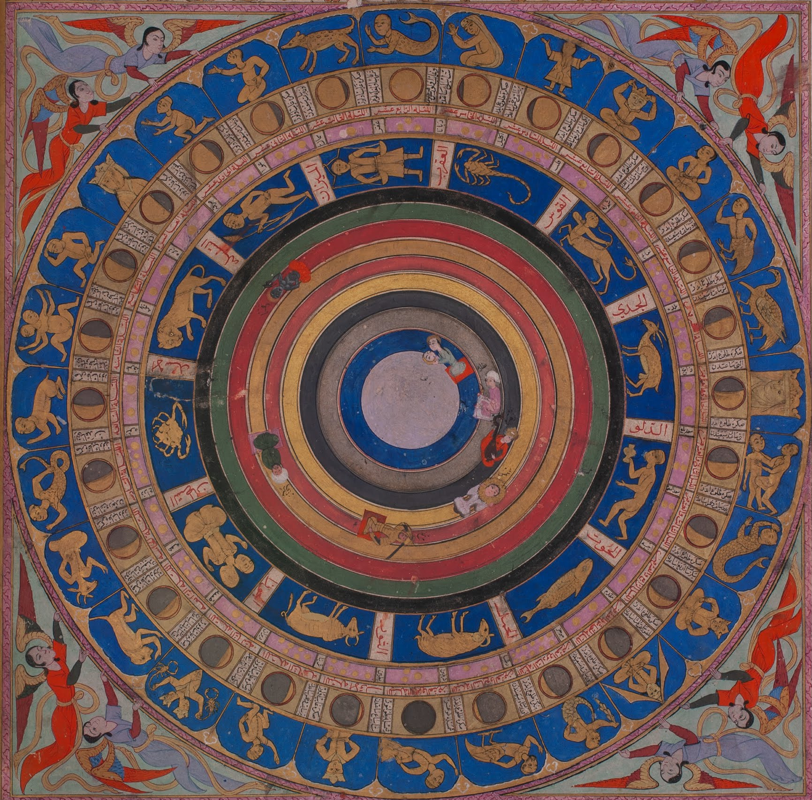
Celestial map: zodiac and lunar mansions, Seyyid Lokman workshop, late 16th c. (Wikimedia Commons)
Celestial Map: Zodiac and Lunar Mansions
https://commons.wikimedia.org/wiki/File:Celestial_map,_signs_of_the_Zodiac_and_lunar_mansions..JPG Public domain. Via Wikimedia Commons.
{kind=link}
The choice
The question every dynasty eventually asks its scholars, asked privately, at night: how long? There is a stars answer, a letters answer, a historian’s answer, and a prudent silence. Whichever you give will be repeated.
- Read it from the ruler’s name
- Give the astrological answer
- Refuse to name a term
THE KITĀBKHĀNA · THE CALLIGRAPHER HAS FOUND A PATTERN
Plate in use PLAUSIBLE-GAPPlate in use
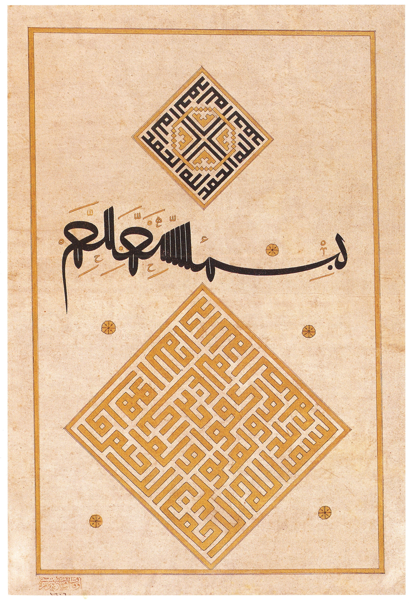
Square Kufic Bismillah page by Ahmed Karahisari, 16th c. (Wikimedia Commons)
Square Kufic Bismillah Page by Ahmed Karahisari
https://commons.wikimedia.org/wiki/File:Karahisari.jpg Public domain. Via Wikimedia Commons.
{kind=link}
The choice
The court calligrapher has been laying out a square Kufic panel and has noticed that the letters, forced into a grid, generate the same proportions in three different verses. She wants to know whether she has found something or merely made …
- Work it out with her
- Take the observation and thank her
- Tell her it is an artifact of the grid
THE KITĀBKHĀNA · YOUR DIAGRAM, PROPERLY MADE
Plate in use PLAUSIBLE-GAPPlate in use
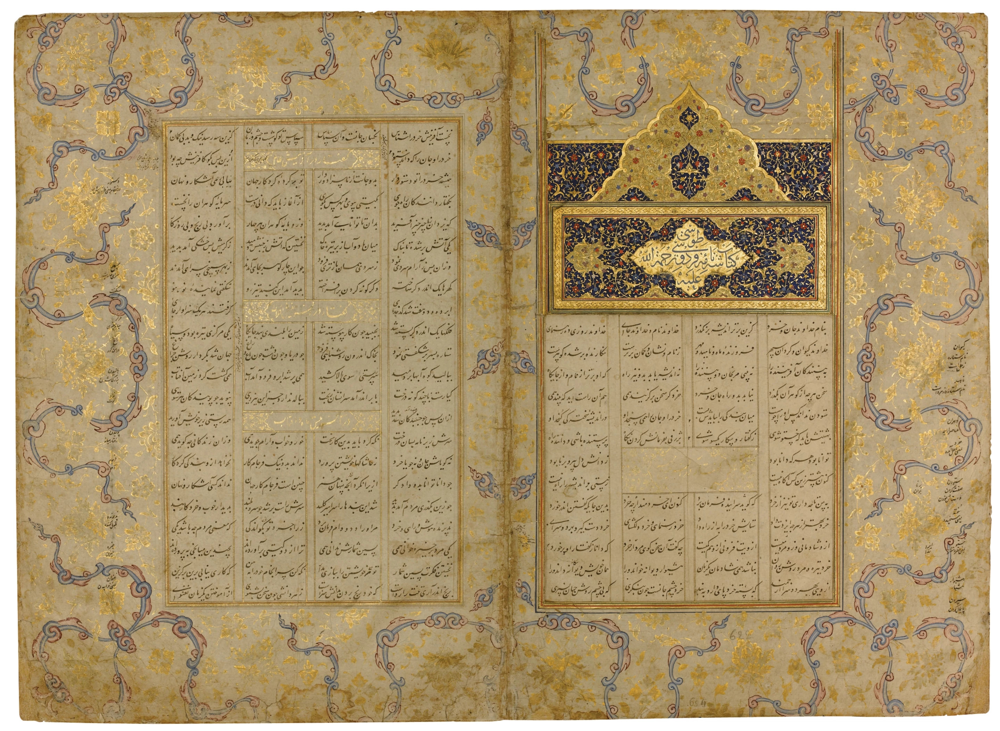
Safavid illuminated manuscript page, Shahnameh tradition (Wikimedia Commons)
Safavid Illuminated Manuscript: The Shahnameh Tradition
https://commons.wikimedia.org/wiki/File:The_Opening_Illuminated_Double_Page_from_the_Shah_Isma%27il_II_Manuscript_of_Firdausi%27s_Shahnameh,_Persia,_Qazvin,_Safavid,_circa_1577.jpg Public domain. Via Wikimedia Commons.
{kind=link}
The choice
The kitābkhāna offers to make one of your cosmological diagrams the way it makes things for princes: gold, lapis, a full folio. A diagram that beautiful is an argument that travels — and a diagram that beautiful is also evidence.
- Let them make it magnificent
- Insist on a plain, teachable version
- Keep the diagram out of the workshop
THE STAR-TABLE ROOM · A COMPUTER WANTS TO ARGUE
Plate wanted PLAUSIBLE-GAPWhat the picture should show
Astronomers at work: tables, instruments, a quadrant or armillary, two men disagreeing over a sheet of figures.
Composition
Paper and instruments crowding the frame. Argument conducted through numbers.
Search terms
- observatory astronomers manuscript miniature
- zij astronomical tables illustration
- Maragha Samarkand observatory painting
The choice
One of the men who computes tables for a living has read your letter-work and wants to know, without hostility, why he should believe any of it. He is not a preacher. He is the harder audience: someone who checks.
- Show him the mathematics and let him check it
- Answer from authority instead
Candidate sources
Ottoman/Persian observatory scenes (e.g. Istanbul observatory of Taqī al-Dīn)
https://commons.wikimedia.org/ The Taqī al-Dīn observatory miniature is the single most reproduced image of Islamic astronomers at work; later (1570s) but iconographically ideal. Licence: Per file — CC0 / CC BY-SA / PD
BL astronomical manuscripts
https://www.qdl.qa/ Licence: Mostly open; check per item
THE STAR-TABLE ROOM · A RIVAL CHALLENGES YOUR CALCULATION
Plate wanted INVENTED-COMPATIBLEWhat the picture should show
Two astrologers in confrontation over a horoscope diagram — the circular chart between them, both pointing.
Composition
The horoscope wheel dead centre, faces at the edges. The diagram wins the frame.
Search terms
- horoscope chart Persian manuscript
- astrological diagram nativity Islamic
- astrologers dispute miniature
The choice
The court’s senior astrologer has found — or manufactured — an error in your last reading, and has chosen the audience hall to mention it. He is competent, he is threatened, and he has been at this court longer than you.
- Answer with the numbers, publicly
- Offer him joint work instead
- Answer as a jurist: question his standing to accuse
- Concede the point and correct the record
Candidate sources
Horoscope of Iskandar Sulṭān (Wellcome) · Wellcome MS Persian 474
https://wellcomecollection.org/ The Iskandar Sulṭān horoscope is the single most on-point object in existence for this game: cast for Ibn Turka's own first patron, 1411. Wellcome licenses CC BY. HIGH PRIORITY. Licence: Per file — CC0 / CC BY-SA / PD
THE KITĀBKHĀNA · THE MONUMENTAL QURʾAN
Plate in use ATTESTEDPlate in use
Square Kufic Bismillah page by Ahmed Karahisari, 16th c. (Wikimedia Commons)
Square Kufic Bismillah Page by Ahmed Karahisari
https://commons.wikimedia.org/wiki/File:Karahisari.jpg Public domain. Via Wikimedia Commons.
The choice
The kitābkhāna is preparing the largest Qurʾan ever attempted — pages taller than a man, a monument in ink. Bāysunghur asks, in the manner of a prince who already suspects the answer, whether the science of letters has anything to say about…
- Offer a lettrist framework for the layout
- Advise the calligraphers privately
- Keep your science away from Scripture
THE CAMPAIGN · AN ARMY THAT IS NOT THERE
Plate in use INVENTED-COMPATIBLEPlate in use
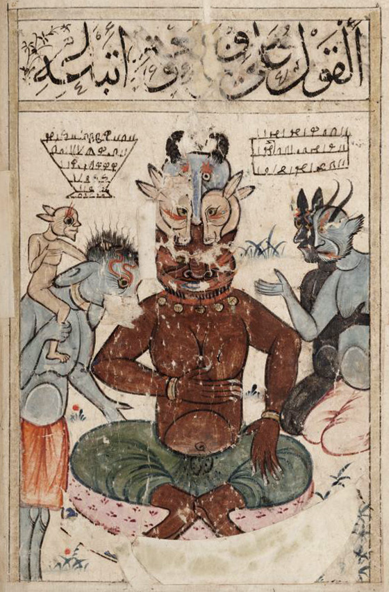
Demons, Kitāb al-Bulhān — Baghdad, late 14th–15th c. (Wikimedia Commons)
Demons (Devils), Kitāb al-Bulhān
https://commons.wikimedia.org/wiki/File:Kitab_al-Bulhan_---_demons.jpg Public domain. Via Wikimedia Commons.
{kind=link}
The choice
A commander with a thin garrison and a wide frontier has heard — from a feast, from a rumor, from somewhere — that the old manuals describe smokes that read at distance as giant figures, even armies. The books do describe them. They also de…
- Attempt the great suffumigation
- Tell him what the books do not say
- Decline the whole question
THE FEAST · LATE, AND THE VIZIER IS ASLEEP
Plate in use INVENTED-COMPATIBLEPlate in use
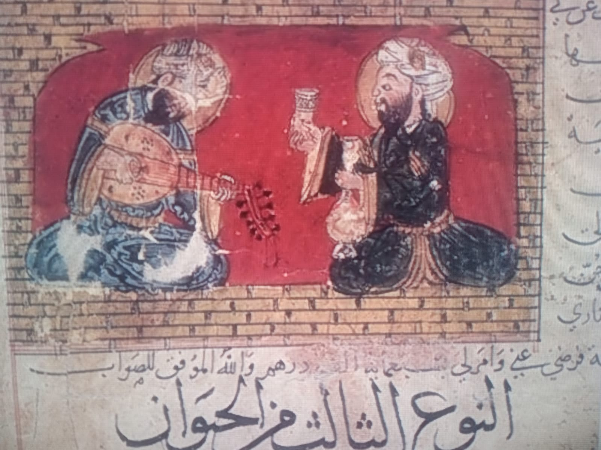
The Singer Ibrāhīm and the Jinn — Iran, early modern copy (Wikimedia Commons)
The Singer Ibrāhīm and the Jinn
https://commons.wikimedia.org/wiki/File:The_Singer_Ibrahim_and_the_jinn.jpg Public domain. Via Wikimedia Commons.
{kind=link}
The choice
Deep in the night-half of the bazm, a junior vizier has fallen asleep sitting upright, and the prince — delighted, a little drunk — remembers a story: that the old manuals teach how to make a sleeping man answer questions truthfully. Everyo…
- Perform it as theater
- Refuse — and say why
- Offer the opposite trick instead
THE FEAST · SOMETHING TO ASTONISH THE TABLE
Plate in use ATTESTEDPlate in use
Winged angels, al-Qazwīnī’s Wonders of Creation (Wikimedia Commons)
Winged Angels (and Winged Feline and Cow), al-Qazwīnī's ʿAjāʾib al-makhlūqāt
https://commons.wikimedia.org/wiki/File:A)_Winged_Feline_and_Cow;_b)_Two_Winged_Angels,_Folio_from_a_Manuscript_of_Al-Qazwini%27s_Ajaib_Al-Makhluqat_LACMA_M.88.213.8a-b.jpg Public domain. Via Wikimedia Commons.
The choice
Deep into the bazm, the prince wants a wonder and everyone is drunk enough to want it badly. This is not a lesser occasion than the audience hall. Half the political business of this court is done exactly here, in jokes.
- The vanishing ink
- Give them a number-riddle instead
- Perform something frankly ridiculous
THE FEAST · WHO EVERYONE ACTUALLY IS
Plate wanted ATTESTEDWhat the picture should show
A feast late in the evening — wine, musicians, guests in various states of candour. The formal occasion has decayed into truth-telling.
Composition
Horizontal sprawl. Nobody sitting properly any more.
Search terms
- bazm feast Persian miniature
- wine gathering musicians Timurid painting
- courtly banquet manuscript
The choice
Late, and the table has thinned to the people who stay late. A jurist here is quietly devoted to the Prophet’s family; a Sufi turns out to be rigorous in law; the prince’s secretary is reading something he should not have. None of these ide…
- Answer differently to each of them
- Give all of them the same answer
- Turn the question into a joke and go to bed
Candidate sources
Divan of Sultan Ahmad Jalayir bazm scenes, c. 1400 · Freer F1932.29–37
https://asia.si.edu/collections/ Licence: CC0
Persian bazm/feast painting
https://chesterbeatty.ie/collections/ Licence: Creative Commons, attribution required (variant unconfirmed)
THE CAMPAIGN · AN AUSPICIOUS DATE FOR THE ARMY
Plate wanted ATTESTEDWhat the picture should show
An astrologer consulted on campaign: tent or field setting, a chart unrolled, commanders waiting on an answer.
Composition
Military and astrological apparatus in one frame. The army is waiting on a diagram.
Search terms
- election astrology military campaign miniature
- army camp tent Persian painting
- astrologer advising ruler manuscript
The choice
The army moves in the spring and the prince wants a date. This is not a parlor question: men will march on your arithmetic, and if the campaign goes badly, the record will show who chose the day.
- Compute the election honestly
- Give a window, not a day
- Refuse to date a war
Candidate sources
Persian campaign/encampment scenes
https://chesterbeatty.ie/collections/ Licence: Creative Commons, attribution required (variant unconfirmed)
Search: Persian military encampment
https://www.metmuseum.org/art/collection Licence: CC0 for public-domain works
THE CAMPAIGN · A SOLDIER WANTS THE TRICK
Plate wanted ATTESTEDWhat the picture should show
A soldier requesting a talisman — a plain military man and a scholar, an amulet or inscribed square changing hands.
Composition
Two figures, one small object. The object is what the picture is about.
Search terms
- talisman amulet Islamic manuscript
- magic square wafq talismanic shirt
- protective amulet warrior
The choice
An officer who saw the feast-night ink has thought about it for a month. He does not want a wonder. He wants dispatches that cannot be read if intercepted, and he is prepared to pay for a method, not a marvel.
- Give him the working method
- Offer the service, not the method
- Refuse him
Candidate sources
Talismanic shirt, Islamic
https://www.metmuseum.org/art/collection Met holds talismanic shirts under Open Access CC0 — an inscribed garment is a superb visual for military talismanry. Licence: CC0 for public-domain works
Talismanic shirts and magic squares
https://commons.wikimedia.org/ Licence: Per file — CC0 / CC BY-SA / PD
TOWARD 1420 · THE COURT YEARS END
Plate in use ATTESTEDPlate in use

"Caesar Makes a Talisman", folio from a Shahnama, Iran c. 1330–40 — MET (CC0)
'Caesar Makes a Talisman', Shahnama Folio (MET, CC0)
https://commons.wikimedia.org/wiki/File:%22Caesar_Makes_a_Talisman%22%2C_Folio_from_a_Shahnama_%28Book_of_Kings%29_MET_DP223864.jpg CC0
{kind=link}
The choice
Courts end. Iskandar Sultan overreached his uncle Shāh Rukh and paid for it in the way Timurid princes do; the workshops disperse, the patronage reshuffles, and men who were somebody last spring are looking for a house. What you take out of…
- Leave with the work, and nothing else
- Attach yourself to the surviving house
- Leave with your people
Phase 4 · THE PIVOT — 1420 — c. 1419–1422 · 13 choice pages, 11 still wanting a plate
THE DESK · BEGINNING THE SUMMA
Plate wanted ATTESTEDWhat the picture should show
A blank first page and a prepared pen. The moment before a major work starts.
Composition
Almost empty. Deliberate negative space — the only plate in the game that should feel unpopulated.
Search terms
- blank folio ruled manuscript
- reed pen qalam inkwell
- scribe beginning manuscript
The choice
Twenty years of notes, and the shape of the thing is finally visible: not a commentary, not a manual, but a systematic philosophy in which letter, number, and cosmos are one science. It has never been done. The only question is what kind of…
- Build it as a complete philosophical system
- Build it as a usable handbook
- Not yet — spend the year deepening instead
Candidate sources
Blank/ruled folios and writing implements
https://www.thedigitalwalters.org/ Licence: CC0 — no attribution required
THE DESK · IN WHICH LANGUAGE, AND FOR WHOM
Plate wanted ATTESTEDWhat the picture should show
Arabic and Persian script side by side — two pages, two hands, or a bilingual page. The choice of audience made visible as letterforms.
Composition
Split composition. Script as subject, not decoration.
Search terms
- bilingual Arabic Persian manuscript page
- naskh nastaliq comparison
- interlinear Persian translation manuscript
The choice
Arabic is the language of the learned world and of every authority you cite. Persian is the language princes, poets and administrators actually read for pleasure. The same argument in the two languages is not the same argument: one is a mon…
- Dense Arabic, for the qualified few
- Persian, for warlords and administrators
- Both: the summa in Arabic, a Persian exposition beside it
Candidate sources
Bilingual or glossed Arabic/Persian codices
https://www.thedigitalwalters.org/ Licence: CC0 — no attribution required
Islamic MSS with interlinear Persian
https://library.princeton.edu/special-collections Licence: Per item; many open
THE DESK · WHAT TO CONCEAL AND WHAT TO EXPLAIN
Plate wanted ATTESTEDWhat the picture should show
A page with deliberate obscurity — cipher, abbreviation, coded marginalia, or a diagram whose key is withheld.
Composition
The page should be beautiful and unreadable. Concealment as craft.
Search terms
- cipher cryptography Arabic manuscript
- coded marginalia Islamic
- secret alphabet occult manuscript
The choice
Every esoteric tradition you inherited hides its operative core behind allusion. You could do that. Or you could explain the diagrams, define the terms, and adapt the vocabulary so that a philosopher, a jurist and a mathematician each find …
- Explain everything, and adapt the terminology
- Explain the frame, conceal the operative core
- Write it for those who already know
Candidate sources
BL Arabic MSS on cryptography (al-Kindī tradition)
https://www.qdl.qa/ Licence: Mostly open; check per item
Occult-scientific MSS with cipher
https://library.princeton.edu/special-collections Licence: Per item; many open
THE DESK · THE THREE GLOBES OF LIGHT
Plate wanted ATTESTEDWhat the picture should show
A cosmological diagram of nested or concentric spheres — light emanating through graded levels.
Composition
Pure diagram, centred, symmetrical. This is the metaphysics on one page.
Search terms
- concentric spheres cosmological diagram Islamic
- celestial spheres manuscript illustration
- emanation diagram Sufi manuscript
The choice
The architecture question, finally: the Letter exists three ways — thought, written, spoken — and you have taken to calling their registers the three Globes of Light: Planet, Pearl, and Peach. A summa could march through them in order like …
- Structure it as ascent–descent–ascent
- Structure it as a plain curriculum
Candidate sources
Islamic cosmological diagrams (ʿAjāʾib al-makhlūqāt tradition)
https://commons.wikimedia.org/ The project already holds a Qazwīnī plate (c19-qazwini-angel.jpg), so the ʿAjāʾib tradition is proven usable here. Licence: Per file — CC0 / CC BY-SA / PD
Cosmological diagrams in Islamic MSS
https://library.princeton.edu/special-collections Licence: Per item; many open
THE DRAWING BOARD · THE ṬAHAWĪ CIRCLE
Plate in use ATTESTEDPlate in use
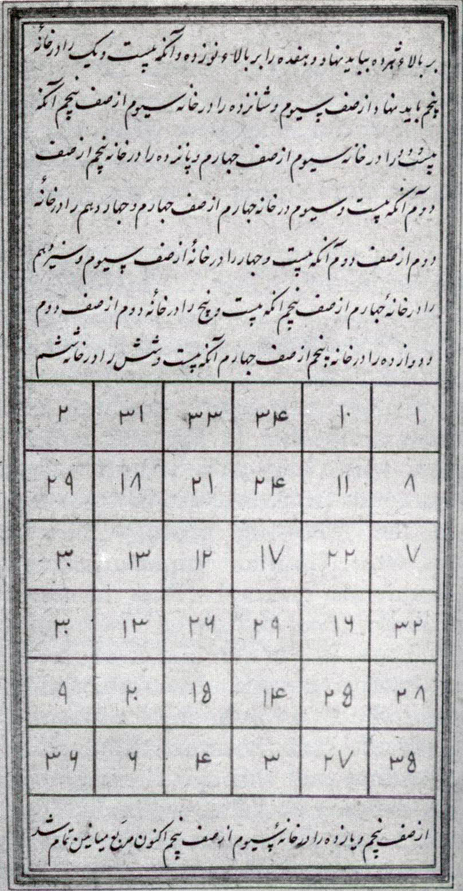
Persian wafq — a 6×6 magic square with instructions, 16th c. (Wikimedia Commons)
Persian Wafq — a 6×6 Magic Square with Instructions
https://commons.wikimedia.org/wiki/File:16th_century_arabic_magic_square.jpg Public domain. Via Wikimedia Commons.
{kind=link}
The choice
The system needs one image that holds it all: the Pythagorean Tetractys, rebuilt in letters. Get this right and a reader grasps in one glance what the prose takes four hundred pages to argue. Get it wrong and the whole edifice looks like de…
- Draw the Circle, and draw it simply
- Make it magnificent instead of simple
- Argue it in prose; draw nothing
THE DRAWING BOARD · THE SEVEN TIERS
Plate wanted PLAUSIBLE-GAPWhat the picture should show
A magic square (wafq) under construction — grid partly filled, working numerals visible.
Composition
Flat, geometric, top-down on the page. Mathematics as drawing.
Search terms
- wafq magic square manuscript
- buduh magic square Islamic
- numerical grid talisman manuscript
The choice
A second, shorter Persian treatise wants to be written: a ranking of the ways of knowing, from the traditionists who read only the surface at the bottom, up through theologians, philosophers and Sufis, to lettrism at the apex of human perfe…
- Write it, apex and all
- Write it, but without naming the bottom
- Leave it unwritten
Candidate sources
Islamic magic squares
https://commons.wikimedia.org/ The project already holds several: c20-letter-word-wafq-table, c31-5x5-jafar-wafq, cs-p4-persian-wafq-6x6, cs-p2-buduh-square. A seven-tier example would extend the set. Licence: Per file — CC0 / CC BY-SA / PD
THE CIRCLE · YAZDĪ ASKS FOR THE AUTOGRAPH
Plate wanted ATTESTEDWhat the picture should show
A manuscript being handed from author to disciple. The transmission moment — and echoes the triple portrait already in hand.
Composition
Two figures, one codex, hands overlapping on it.
Search terms
- manuscript transmission ijaza scene
- teacher giving book to student miniature
- author autograph copy Islamic
The choice
Yazdī wants to copy the autograph in his own hand — not have it copied, copy it himself, which between the two of you means something. He is becoming the historian who writes dynasties into the heavens. What he carries, the century carries.
- Give him the autograph
- Work through it with him, line by line
- Keep the autograph in your own keeping
Candidate sources
Ibn Turka with Qāḍīzāda Rūmī and Yazdī
https://commons.wikimedia.org/ The project HOLDS this image (research inbox), and its cut region "the-document" is exactly this beat. Provenance unidentified — see HANDOVER §5. Best single match in the whole catalogue if it can be sourced. Licence: Per file — CC0 / CC BY-SA / PD
THE CIRCLE · WHO GETS THE KNOWLEDGE
Plate wanted ATTESTEDWhat the picture should show
A master with a small selected group versus a larger crowd beyond — the esoteric/exoteric decision as a picture.
Composition
Two zones: an inner ring lit, an outer crowd in shadow. Boundary is the subject.
Search terms
- esoteric teaching circle miniature
- Sufi initiation gathering painting
- master selected disciples manuscript
The choice
They keep coming: a persistent student who has copied everything you ever circulated, two correspondents from Shiraz, a young jurist who asks better questions than your colleagues. You can build a school, or you can build a secret. The trad…
- Teach anyone who comes
- Take a handful of qualified students only
- Teach no one
Candidate sources
Sufi assembly scenes
https://chesterbeatty.ie/collections/ Licence: Creative Commons, attribution required (variant unconfirmed)
THE DESK · AGAINST AVICENNA ON THE SENSES
Plate wanted ATTESTEDWhat the picture should show
A diagram of the faculties of the soul, or the ventricles of the brain with the internal senses labelled.
Composition
Schematic head or nested-faculty chart. Medieval cognitive science as drawing.
Search terms
- internal senses brain ventricles diagram medieval
- faculties of soul diagram Islamic
- Avicenna De Anima illustration
The choice
Buried in the summa is a quarrel you did not go looking for: your account of how the Letter reaches mind through ear and eye will not fit Avicenna’s hierarchy of the senses, and you are increasingly sure Avicenna is wrong. Correcting the Ma…
- Publish the correction now
- Hold it until your name can absorb the backlash
Candidate sources
Medieval brain-ventricle / internal senses diagrams
https://commons.wikimedia.org/ Licence: Per file — CC0 / CC BY-SA / PD
BL medical/philosophical MSS, Ibn Sīnā tradition
https://www.qdl.qa/ Licence: Mostly open; check per item
THE DESK · WHOSE NAMES GO IN THE MARGINS
Plate wanted ATTESTEDWhat the picture should show
A page dense with marginalia and glosses in several hands — the apparatus of citation.
Composition
Text block small, margins crowded. The margins are the picture.
Search terms
- marginalia glosses Arabic manuscript
- hashiya commentary margins Islamic
- annotated folio multiple hands
The choice
The summa rests on shoulders: Ibn ʿArabī, Ḥamūya, Akhlāṭī, the Brethren old and new. A book that names them all is honest and smaller-looking. A book that absorbs them silently is grander — and every absorbed source is a witness your enemie…
- Credit the lineage generously
- Let your own name carry more than it earned
Candidate sources
Heavily glossed Arabic/Persian folios
https://www.thedigitalwalters.org/ CC0 high-res makes marginalia legible, which matters for this one. Licence: CC0 — no attribution required
Annotated Islamic MSS
https://library.princeton.edu/special-collections Licence: Per item; many open
THE CIRCLE · THE POPULAR COMMISSION
Plate wanted PLAUSIBLE-GAPWhat the picture should show
A working grimoire rather than a philosophical treatise: cruder drawing, seals, angel names, practical operations.
Composition
Deliberately less refined than the other plates. The contrast is the point.
Search terms
- Shams al-Maarif al-Buni manuscript
- grimoire seals angel names Arabic
- practical magic manuscript Islamic
The choice
A bookseller’s consortium makes a proposal with real money in it: not the summa — nobody can sell the summa — but a manual. Named operations, numbered steps, results promised: the vanishing inks, the wake-rites, the figures in sand. The kin…
- Write the practical manual
- Counter-offer the elite commission
- Decline the trade entirely
Candidate sources
Shams al-Maʿārif (al-Būnī)
https://commons.wikimedia.org/ Already in the registry as act1-ms-17c-opening.jpg — the al-Būnī tradition is cleared and available. A second operational page would suit this beat. Licence: Per file — CC0 / CC BY-SA / PD
Islamic occult MSS, operative texts
https://library.princeton.edu/special-collections Licence: Per item; many open
THE OBSERVATORY RISING · ULUGH BEG BREAKS GROUND
Plate in use ATTESTEDPlate in use
Persian astrolabe, brass (Wikimedia Commons)
Persian Astrolabe (brass)
https://commons.wikimedia.org/wiki/File:Astrolabe,_Iran,_undated,_brass_-_Huntington_Museum_of_Art_-_DSC04900.JPG Public domain (CC0, Huntington Museum of Art). Via Wikimedia Commons.
The choice
In Samarkand they are laying the foundations of the largest astronomical instrument on earth. The tables it produces will still be in use in London four centuries from now. Nobody there is thinking about lettrism — but the man building it w…
- Put your mathematics at their disposal
- Argue that star science and letter science are one enterprise
- Stay at your desk
THE FIRST SUMMONS · A TRIBUNAL SENDS FOR YOU
Plate wanted ATTESTEDWhat the picture should show
An official summons arriving — a sealed document, or armed men at a scholar's door. The mood turns here.
Composition
Threat entering domestic space. Doorway framing.
Search terms
- arrest summons manuscript miniature
- officials at door Persian painting
- sealed decree Islamic
The choice
It arrives with a seal and a date: you are required to answer questions concerning your doctrine. It is not, yet, a trial. It has been engineered by colleagues — men who know exactly what to quote, because you wrote it down and let it circu…
- Go, and prepare a full defense
- Go, but send to your patron first
- Go quietly, and concede whatever is cheap
Candidate sources
Persian narrative painting, arrest/summons
https://chesterbeatty.ie/collections/ Licence: Creative Commons, attribution required (variant unconfirmed)
Phase 5 · THE TRIALS — c. 1422–1432 · 13 choice pages, 10 still wanting a plate
THE TRIBUNAL · THE FIRST INQUISITION
Plate in use ATTESTEDPlate in use
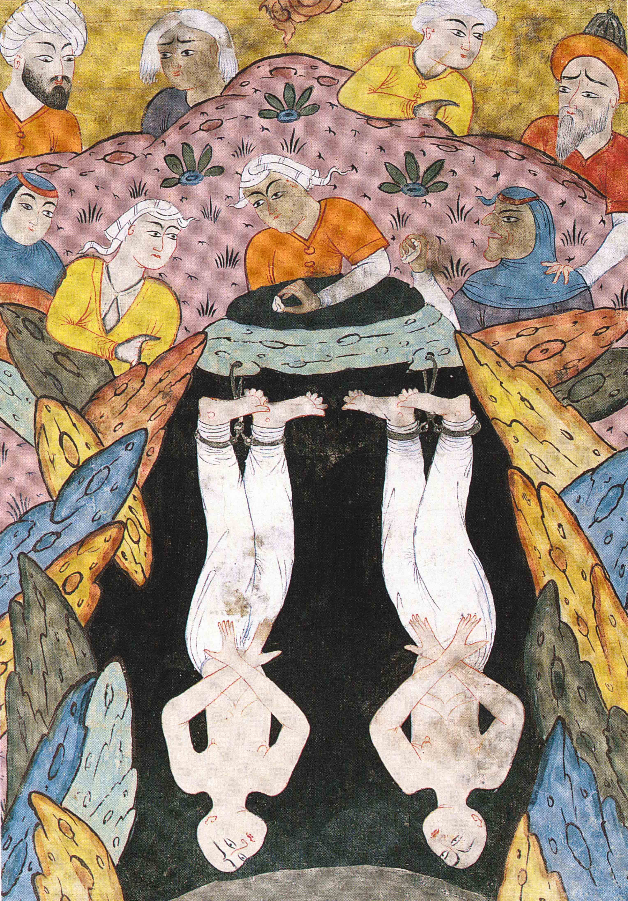
The fallen angels Hārūt and Mārūt, suspended at Babel — Iran, 16th–17th c. (Wikimedia Commons)
The Fallen Angels Hārūt and Mārūt
https://commons.wikimedia.org/wiki/File:FallenAngelsHarutandMarut.jpg Public domain. Via Wikimedia Commons.
{kind=link}
The choice
The charge is framed around Qurʾan 2:102 and the angels at Babel who taught men magic: whatever you call your ʿilm al-ḥurūf, the prosecution says, this is what it descends from. Your accusers are colleagues. They have read you closely, whic…
- Distinguish theoretical lettrism from sorcery
- Answer with a creedal statement
- Attack the accusers’ standing
THE TRIBUNAL · THE SECOND INQUISITION
Plate wanted ATTESTEDWhat the picture should show
A formal examination: a panel of jurists, the accused standing alone, documents in evidence.
Composition
The panel as a wall of faces. One man facing many. Should feel worse than the first tribunal.
Search terms
- inquisition tribunal Islamic manuscript
- ulama panel judgment miniature
- heresy trial Persian painting
The choice
They have learned. This time the charge quotes your own circulated work back at you, in context, with the difficult passage on the board. There is no procedural escape from a quotation you actually wrote.
- Defend the passage as written
- Let your patron end it
- Disown the passage
Candidate sources
Persian judicial/tribunal scenes
https://chesterbeatty.ie/collections/ Licence: Creative Commons, attribution required (variant unconfirmed)
Maqāmāt judicial assemblies · BnF Arabe 5847
https://gallica.bnf.fr/ Licence: Free non-commercial + academic with credit; commercial requires fee
THE TRIBUNAL · THE THIRD INQUISITION
Plate in use ATTESTEDPlate in use
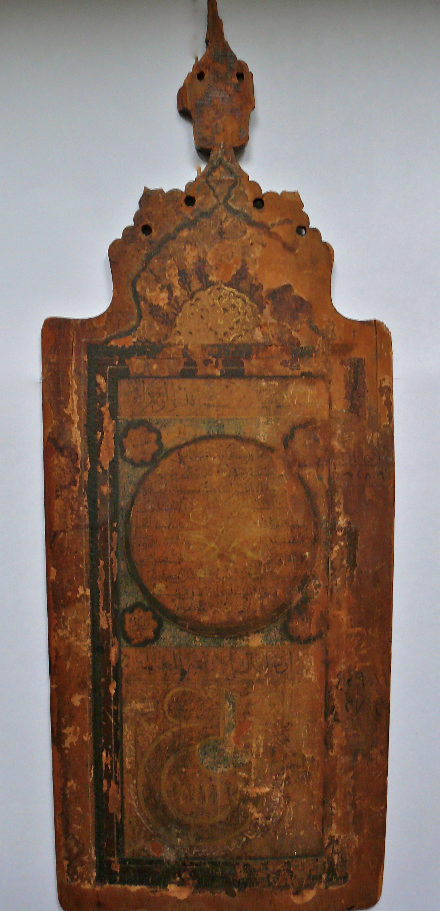
Hilye-i Şerif — calligraphic description of the Prophet, Ottoman (Wikimedia Commons)
Hilye-i Şerif (Calligraphic Description of the Prophet)
https://commons.wikimedia.org/wiki/File:Hilya.JPG CC BY 3.0 (uploader 'Orientalist'). Via Wikimedia Commons.
{kind=link}
The choice
The third is different. The panel is chosen, not assembled; the charge is broad enough to cover a life; and the question underneath every question is simply whether a man may build a science the state has not authorized. This is the one the…
- Hold firm and refuse to bend
- Recant
- Give them a name
- Do not appear
THE PATRON’S DOOR · ASKING FOR PROTECTION
Plate wanted PLAUSIBLE-GAPWhat the picture should show
A supplicant before a patron — kneeling or bowing, the asymmetry total. The gift-scene inverted: now you are asking.
Composition
Deliberately mirror the patronage plates from Phase III, with the postures reversed.
Search terms
- supplication petition ruler miniature
- kneeling before prince Persian painting
- seeking protection court scene
The choice
The household that has paid you for a decade can make a tribunal go away, and knows it. The steward makes you wait, which is the message. Protection is available. It is not free, and it is not unlimited.
- Ask outright
- Offer something first
- Do not ask
Candidate sources
Akhlāṭī receiving gifts from Barqūq · BL Or. 11837 f.117
https://commons.wikimedia.org/ The project holds this. Its inverse — patronage as dependence rather than reward — is exactly this beat; consider reusing the same plate to make the rhyme. Licence: Per file — CC0 / CC BY-SA / PD
THE PATRON’S DOOR · A QUIET ARRANGEMENT IS PROPOSED
Plate wanted INVENTED-COMPATIBLEWhat the picture should show
A private conversation in a corner — two men, no audience, a document between them. Something is being offered that will not be minuted.
Composition
Small, shadowed, off to one side. The two figures outside the wall in the Akhlāṭī plate are the model.
Search terms
- private conversation conspiracy miniature
- two figures conferring Persian painting
- secret negotiation manuscript
The choice
An intermediary suggests, over excellent tea, that all of this could end permanently. A short written statement withdrawing the more adventurous claims. No trial, no record, no exile. He is being kind. He is also entirely serious.
- Sign the statement
- Refuse, politely
- Offer a narrower statement of your own drafting
Candidate sources
Akhlāṭī plate, region "two-outside-wall" · BL Or. 11837 f.117
https://commons.wikimedia.org/ Already cut as an isolated region in imagelab/output. Directly usable. Licence: Per file — CC0 / CC BY-SA / PD
THE CIRCLE · QĀSIM-I ANVĀR IS EXILED
Plate wanted ATTESTEDWhat the picture should show
A departure under compulsion — a figure leaving a city gate with a small bundle, watchers behind.
Composition
The gate as frame. The exile small against it.
Search terms
- exile departure city gate miniature
- banishment Persian painting
- traveller leaving city manuscript
The choice
The order comes down: Qāsim-i Anvār is expelled, over exactly the associations you share. Everyone who has ever given you advice gives you the same advice now. He is leaving in four days and has not asked you for anything.
- See him off publicly
- Help him quietly
- Let him go
Candidate sources
Persian narrative departures
https://chesterbeatty.ie/collections/ Licence: Creative Commons, attribution required (variant unconfirmed)
Persian painting, journeys and departures
https://asia.si.edu/collections/ Licence: CC0
THE CIRCLE · WHAT TO DO WITH THE MANUSCRIPTS
Plate wanted PLAUSIBLE-GAPWhat the picture should show
Manuscripts being hidden, dispersed or bundled — books treated as contraband.
Composition
Hands and bindings. No faces needed. Urgency.
Search terms
- hiding books manuscripts miniature
- library dispersal Islamic painting
- bundled manuscripts codices
The choice
If the third tribunal goes badly, everything in this room becomes evidence. Your student is willing to carry copies out tonight; your instinct is to keep the autograph where you can defend it. Paper survives men, but only if it is somewhere…
- Disperse copies to four cities
- Send everything to Yazdī
- Keep everything with you
Candidate sources
Bindings and bundled codices
https://www.thedigitalwalters.org/ Licence: CC0 — no attribution required
THE CIRCLE · SOMEONE HAS SIMPLIFIED YOU
Plate wanted ATTESTEDWhat the picture should show
Two versions of one work side by side — a dense original and a thin popularisation. Intellectual theft as a picture.
Composition
Two codices, unequal. The cheap one is on top.
Search terms
- abridgement mukhtasar manuscript
- two versions codex comparison
- popular epitome Islamic manuscript
The choice
A book is circulating that is unmistakably your system, in easy Persian, with the difficulties removed and someone else’s name on it. It is selling. It is also, in three places, wrong — and in two places, better than what you wrote.
- Denounce it
- Correct the errors and endorse the rest
- Ignore it
Candidate sources
Mukhtaṣar (abridgement) manuscripts
https://www.thedigitalwalters.org/ Licence: CC0 — no attribution required
THE EASTERN GATE · A CHECKPOINT WITH YOUR NAME AT IT
Plate wanted INVENTED-COMPATIBLEWhat the picture should show
A city gate with guards inspecting travellers — documents checked, a list consulted.
Composition
Architecture of control. The gate is the antagonist.
Search terms
- city gate guards inspection miniature
- Persian city walls painting
- travellers checkpoint manuscript
The choice
The sentence entitles you to leave; a clerk’s addendum entitles the governor to everything you carry. At the eastern gate the soldiers have a list, and your baggage — books, tables, the years of paper — is exactly what the list is for. The …
- Let them seize the wrong chest
- Pay what the soldiers ask
- Let them take the chests
Candidate sources
Persian city gate scenes
https://chesterbeatty.ie/collections/ Licence: Creative Commons, attribution required (variant unconfirmed)
Search: Persian architecture, city gate
https://www.metmuseum.org/art/collection Licence: CC0 for public-domain works
THE CIRCLE · A COURT STILL WRITES
Plate wanted ATTESTEDWhat the picture should show
Correspondence arriving in exile — a letter with a court seal reaching a man who has nothing else left.
Composition
The seal is the point: institutional power reaching a private man. Small, warm, ambiguous.
Search terms
- sealed letter court seal Persian
- munshaat correspondence manuscript
- receiving letter exile painting
The choice
A letter arrives under a careful seal: a provincial court — one that knows precisely what tribunals you have stood before — would like a protective inscription for a newborn prince. Discreetly. The same science being tried in one city is be…
- Compose the inscription
- Send them the method, not the work
- Burn the letter
Candidate sources
Persian/Arabic correspondence with seals and tughras
https://www.qdl.qa/ Licence: Mostly open; check per item
THE PATRON’S DOOR · WHERE DOES AN EXILE GO
Plate wanted PLAUSIBLE-GAPWhat the picture should show
A traveller at a crossroads, or a map-like view of routes — west to the Aqquyunlu, east to Samarkand, back to Isfahan. The Ulugh Beg choice lives here.
Composition
Openness and indecision. If a Samarkand-specific image can be found, this is where it belongs.
Search terms
- traveller crossroads Persian miniature
- Samarkand Registan architecture
- Ulugh Beg observatory Samarkand
The choice
Exile has a geography. West, the Aqquyunlu courts might take a famous scandal on the bet that his enemies’ enemies are useful. Nowhere in particular, a wandering scholar can go quiet and cheap. And behind you, Isfahan itself — where a petit…
- Try the rival courts westward
- Go nowhere in particular
- Ride for Samarkand and Ulugh Beg
- Petition Isfahan for reconciliation
Candidate sources
Ulugh Beg Observatory, Samarkand — site and sextant
https://commons.wikimedia.org/ Photographs of the surviving meridian arc are widely available on Commons and would ground the Samarkand branch specifically. Licence: Per file — CC0 / CC BY-SA / PD
Search: Timurid architecture, Samarkand
https://www.metmuseum.org/art/collection Licence: CC0 for public-domain works
THE CIRCLE · THE LAST DOCUMENT
Plate wanted INVENTED-COMPATIBLEWhat the picture should show
A final written testament — an old man, a page, a witness. The closing beat of the game.
Composition
Should rhyme with pivot_begin: that plate was a blank page, this one is a finished one.
Search terms
- testament will manuscript witness
- deathbed scholar Persian miniature
- final colophon manuscript
The choice
Every scholar of your generation writes one: the testament — part will, part creed, part account rendered. Yours has a harder question inside it than most, because the thing you would bequeath is a condemned science and the people you would…
- A public statement on the fate of the Investigations
- A quiet transmission to the Brethren alone
- Leave no testament at all
Candidate sources
Colophons and completion statements
https://www.thedigitalwalters.org/ A real colophon — the scribe recording the date of completion — would close the game on a genuine historical object. Licence: CC0 — no attribution required
Persian deathbed/testament scenes
https://chesterbeatty.ie/collections/ Licence: Creative Commons, attribution required (variant unconfirmed)
THE ROAD · WHAT IS LEFT
Plate in use ATTESTEDPlate in use
Teardrop cosmological diagram — Shams al-Maʿārif, p. 256 (Wikimedia Commons)
Teardrop Cosmological Diagram — Shams al-Ma'arif (p. 256)
https://commons.wikimedia.org/wiki/File:Shams_al-Ma%27arif.jpg Public Domain — printed edition over 100 years old. Scan: McGill University Libraries.
The choice
However the tribunals fell out, the years after them are the ones that decide what this life was. There is a road, a diminishing amount of money, and a body of work that is either travelling without you or sitting in a box. What you do with…
- Teach wherever they let you stop
- Finish the work
- Petition, negotiate, rebuild
- Entrust everything to the circle and stop
Archives researched — licence as found, August 2026
https://chesterbeatty.ie/collections/
https://gallica.bnf.fr/